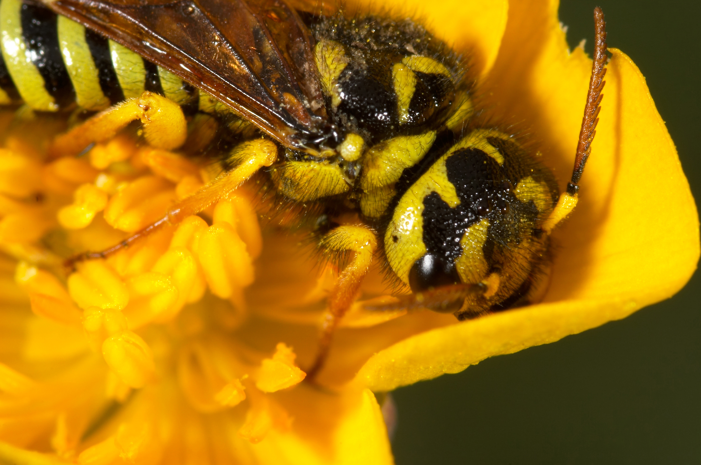
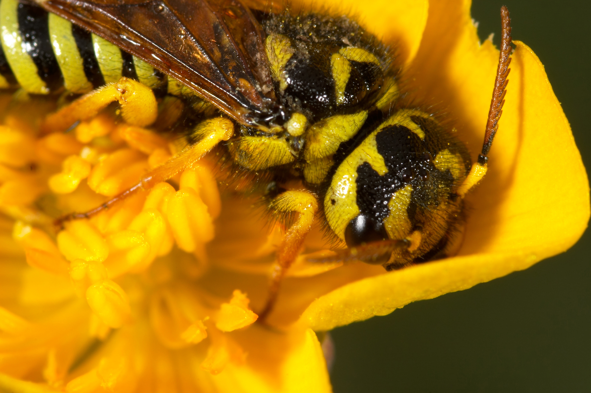

Guêpes

/ Les Guêpe
La Guêpe est un insecte appartenant à l'ordre des Hyménoptères.
Deux paires d'ailes membraneuses + ou - translucides dont la seconde est difficile à voir car plus petite,
Un appareil buccal de type broyeur-lécheur,
Une métamorphose complète : oeuf - larve - nymphe - adulte
Un dard
Aujourd'hui, plus de 200 000 espèces ont été décrites dans le monde, représentant qu'une partie des espèces existantes.
On peut classer les différentes espèces de guêpes en deux catégories:
les guêpes solitaires
les guêpes sociales
Les guêpes solitaires vivent et travaillent seules : la plupart ne construisent pas de nids. Toutes les guêpes solitaires adultes sont fertiles. Ce sont souvent des guêpes parasitaires qui pondent leur œuf dans d'autre insectes en se développant au détriment de celui ci. De plus en plus utilisée en lutte biologique pour parasiter d'autres insectes nuisibles
Les guêpes sociales vivent en colonies. Toutes construisent un nid, plus ou moins élaboré, pouvant contenir en fin de saison plusieurs milliers d'individus. La colonie a une organisation de type REINE - OUVRIÈRES stériles avec naissance de mâles et de femelles fécondes à une période précise de l'année
 

Principales espèces de Guêpes Sociables visibles en France Hyménoptère Intéressons nous aux guêpes sociales (celles qui vivent en groupe) car ce sont elles qui vont nous importunes tout au long de l'été. Leur nid est celui que l'on connaît généralement en "papier mâché" marron. La guêpe fabrique cette pâte à papier en mélangeant sa salive avec de la cellulose (principal constituant du bois) qu'elle récolte en rognant de façon très superficielle du vieux bois et de l'écorce de jeunes rameaux. Leur nid peut se trouver quasiment n'importe où, occupant tout ou partie du volume disponible, tout en épousant les formes du support. C'est ainsi qu'un nid peut se retrouver dans nos boites aux lettres, envahir une double cloison, un plafond, un cabanon de jardin, votre cheminée ....et ce ne sont là que quelques exemples ! Chaque année, les guêpes abandonnent leur ancien nid de papier et en reconstruisent un nouveau. Ces nids sont donc à usage unique et ne seront jamais recolonisés l'année d'après. Si vous avez l'occasion d'avoir un nid vide, observez la façon dont ce nid est construit et vous verrez que la nature fait magnifiquement les choses.